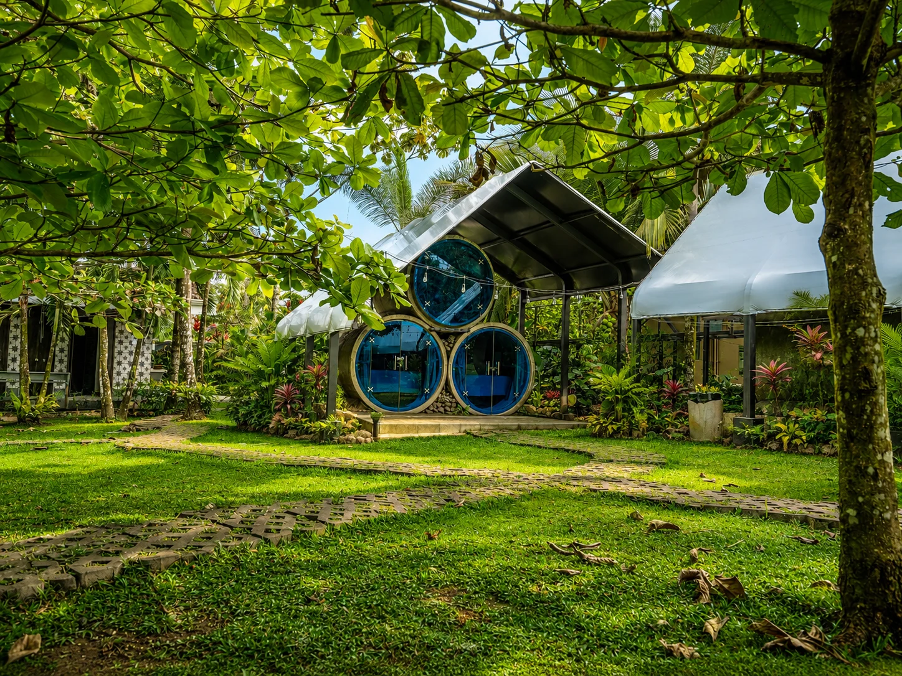
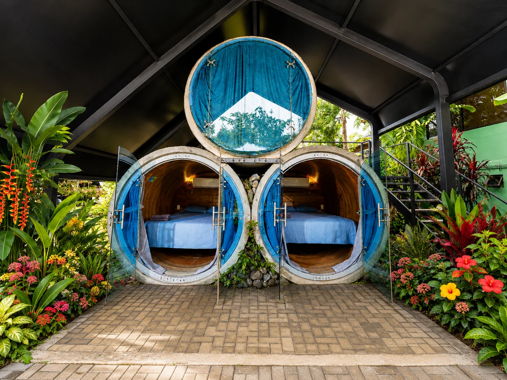

Curiouser.& greener.
A secret world of circular rooms.
Hidden in Arenal. Far from the ordinary.
ARENAL BACKPACKERS RESORTTHE DISCOVERY BEGINS ↓REAL ROOMS. A LITTLE REVERIE.
Let curiosity lead.

between the palms
& the unexpected.
WORLDIN THE GREEN ✳
A DIFFERENT KIND OF REALITY
You took
the curious
little path.
Behind Arenal Backpackers Resort, a different world is waiting. Round rooms. Winding paths. Green in every direction.
Arenal Secret Garden is for the ones who take the little path. The ones who look twice. The ones who want a stay with a story.
FOLLOW THE PATH ↗THROUGH THE LOOKING GLASS.
INTO YOUR OWN LITTLE WORLD.
Dream
in a different dimension.
✳
A LITTLE UNEXPECTED. ENTIRELY UNFORGETTABLE.A shape
of your own.
Distinctive cylindrical rooms with curved wooden interiors and colorful circular doors.
Wake up
to the green.
A new perspective from the pillow. Open the door and let the garden become part of the room.
SOME SECRETS NEED A LITTLE LIGHT
Borrow the
moonlight.
Move your light through the garden.
Follow the three fireflies.
See what finds you.
A SMALL INVITATION
Let something
find you.
Three little lights. Three ways into the garden. Choose a firefly to open a window into the real Arenal Secret Garden.
0 / 3 LITTLE WONDERS FOUND
A world that
won’t sit still.
Little windows into the real garden.
Choose a circle. Look a little closer.
04 — FOLLOW THE MOON
The garden
has a
midnight side.
Follow the glow. The garden has
another story after dark.
YOU’VE COME THIS FAR
Stay a little
out of this world.
Arenal Secret Garden · Costa Rica
Hidden behind Arenal Backpackers Resort.
Real property photographs, framed by imagined botanical scenery.